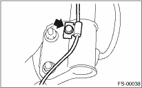

1. Disconnect the ground cable from the battery.
2. Lift-up the vehicle, and remove the front wheels.
3. Disconnect the connector of the front vehicle height sensor. (HID model, right side only)

4. Remove the nuts that hold the front transverse link and the front vehicle height sensor bracket. (HID model, right side only)

5. Remove bolt (A) and clip (B) fixing the front crossmember and the front vehicle height sensor bracket, then remove the front vehicle height sensor assembly. (HID model, right side only)

6. Remove the bolt securing the brake hose from the strut.
7. Scribe an alignment mark on the camber adjusting bolt that secures the strut to the housing.
8. Remove the bolt securing the ABS wheel speed sensor harness.

9. Remove the two bolts securing the housing to the strut.
NOTE:
While holding the head of the adjusting bolt, loosen the self-locking nut.
10. Remove the three nuts securing strut mount to body.